Nature’s Abundance is a photographic exploration of our
evolving relationship with the natural world. Structured as a
three-act visual journey, the series moves from wonder and
appreciation, through coexistence and shared responsibility, to
the urgent realities of environmental change. Together, the works
celebrate nature’s beauty and resilience while inviting reflection
on our role in protecting the ecosystems that sustain all life.
The series asks how today’s choices will shape the landscapes and
futures we leave behind.
An invitation to slow down, observe and rediscover the beauty of the natural world.
Through moments of stillness, light and abundance, these works celebrate nature's quiet generosity
and the intricate ecosystems that sustain all life.
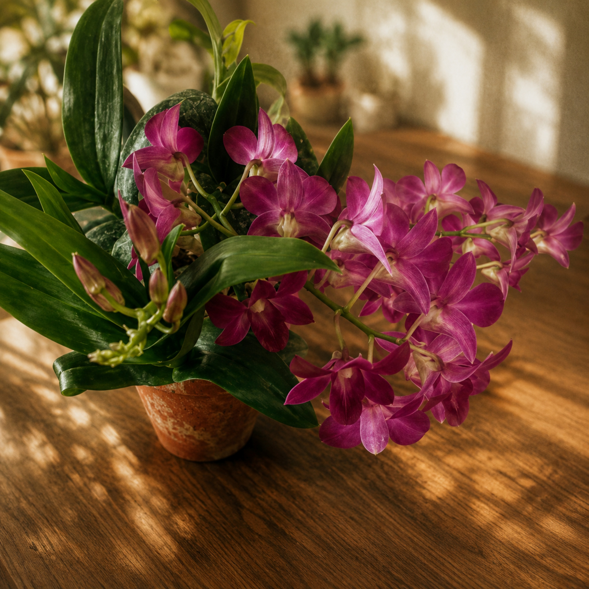
Blooming Presence
Photography
Nature flourishes quietly, asking for nothing while giving endlessly. This work celebrates the resilience,
colour and vitality found in even the smallest blooms,
reminding us that every living thing contributes to the richness of our shared world.
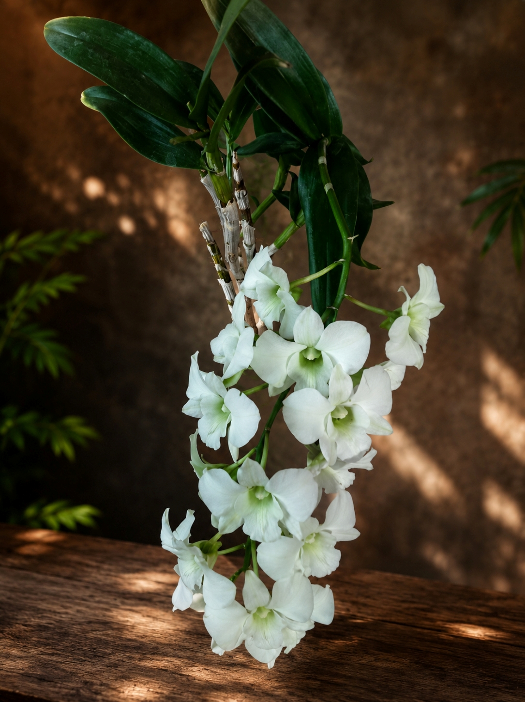
Whisper of Grace
Photography
Every flower tells a story of patience, renewal and quiet strength.
In its simplicity lies a reminder that beauty is not an ornament of nature
but one of the ways life continually renews itself.
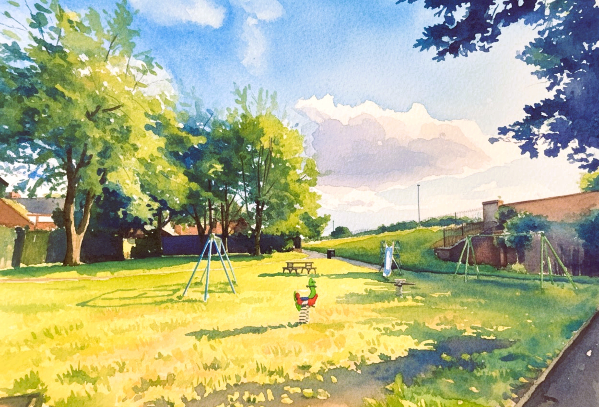
Summer’s Quiet Promise
Photography
Beneath the warmth of summer, nature offers a season of abundance and growth.
The landscape reflects the generosity of healthy ecosystems that nourish life and quietly sustain future generations.
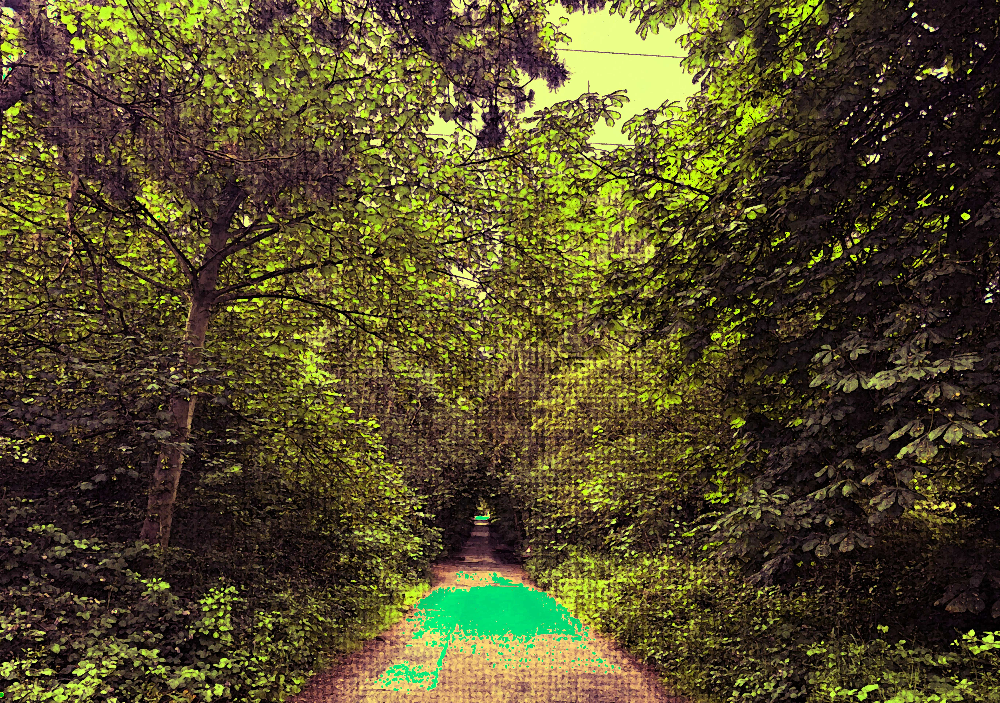
Where Water Wanders
Photography
Water shapes forests, landscapes and communities without force or haste.
Its gentle movement reminds us that every river and stream is part of an interconnected system upon which all life depends.
Into Silence
Photography
Moments of stillness reveal what constant movement often hides.
Within quiet landscapes we rediscover our connection to the natural world and recognise the value of places left undisturbed.
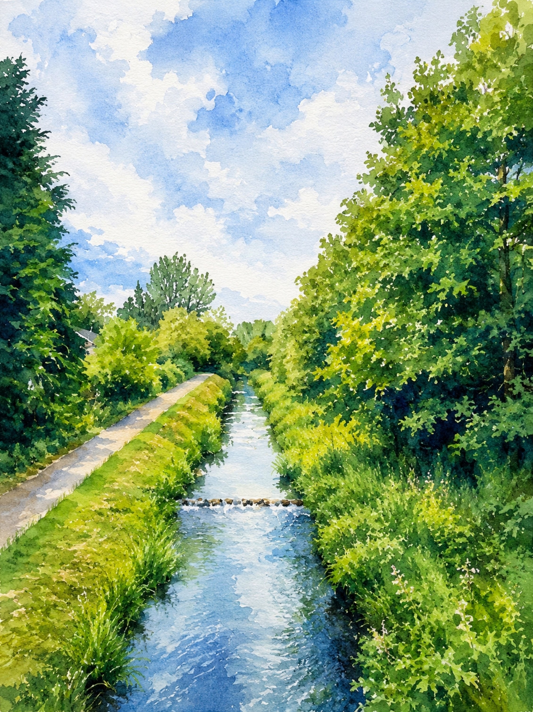
Quiet Abundance
Photography
Nature rarely announces its generosity. It exists in birdsong, wildflowers, trees and open skies,
offering countless gifts that often go unnoticed until they begin to disappear.
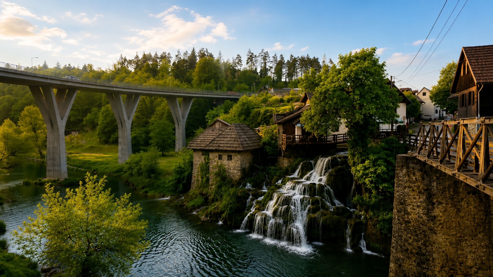
The Source of Renewal
Photography
Every forest, river and living ecosystem begins with a source. Protecting these origins
ensures that life continues to flourish, reminding us that renewal depends upon preserving what sustains it.
Reflections of Tomorrow
Photography
The still waters mirror more than the surrounding landscape—they reflect the future we are creating.
Whether these places remain vibrant depends upon the choices we make today.
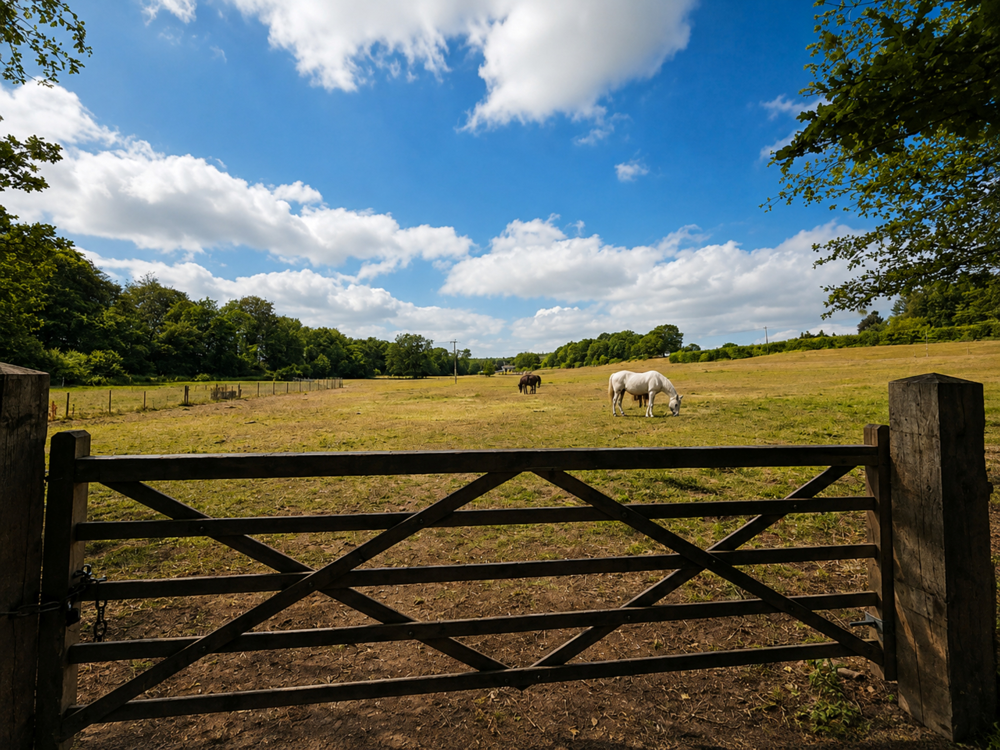
Room for Every Life
Photography
Healthy landscapes provide space not only for people but for countless other species.
Every living creature plays a role in maintaining the balance that allows ecosystems to thrive.
Luminous Path
Photography
Nature offers more than beauty; it offers direction. The illuminated path becomes a symbol of hope,
inviting us to choose stewardship over neglect and to walk towards a future where both humanity and nature flourish together.
Act II
Coexistence
Living with nature rather than simply using it. This act explores our shared responsibility to protect the landscapes,
waters and ecosystems upon which both humanity and the natural world depend.
Living With Water
Photography
For centuries, communities have adapted to the rhythms of rivers rather than attempting to control them.
The landscape reflects a relationship built on respect, where people and nature sustain one another.
Shared Earth
Photography
The open landscape belongs to no single species. Humans, animals and plants all depend upon the same fragile ecosystems,
reminding us that caring for the Earth means protecting every form of life that calls it home.
Harvest Tomorrow
Photography
Every harvest begins with healthy soil, clean water and a stable climate. Caring for the environment
is an investment in future generations.
Edge of Progress
Photography
Human innovation transforms landscapes, yet every development leaves an ecological footprint.
The work asks how progress can continue while preserving the environments that sustain us.
Act III
The Tipping Point
A future that can still be changed.
Borrowed Survival
Photography
Life endures with extraordinary resilience, yet survival cannot be taken for granted.
As habitats shrink and climates change, many species depend upon our willingness to protect what remains.
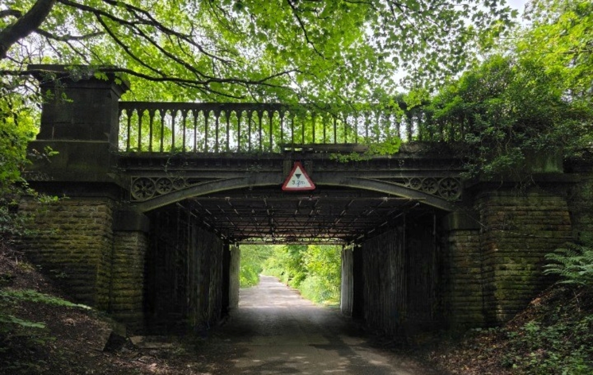
Threshold
Photography
Every generation stands before a choice. This symbolic crossing asks whether we will continue
towards environmental decline or choose restoration, responsibility and hope.
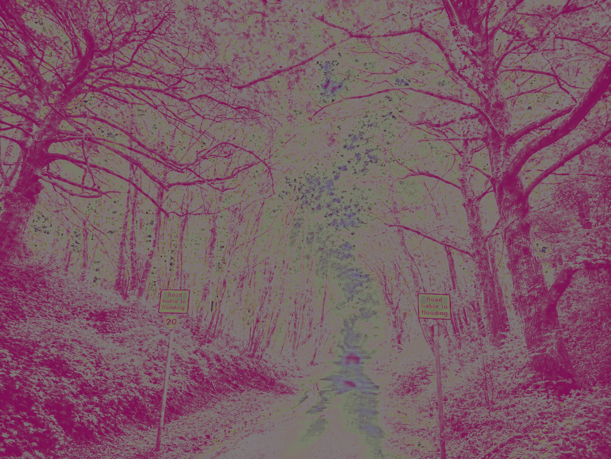
Silent Warning
Photography
The landscape appears familiar, yet subtle signs of ecological imbalance emerge.
The work reminds us that environmental decline often begins quietly before becoming impossible to ignore.
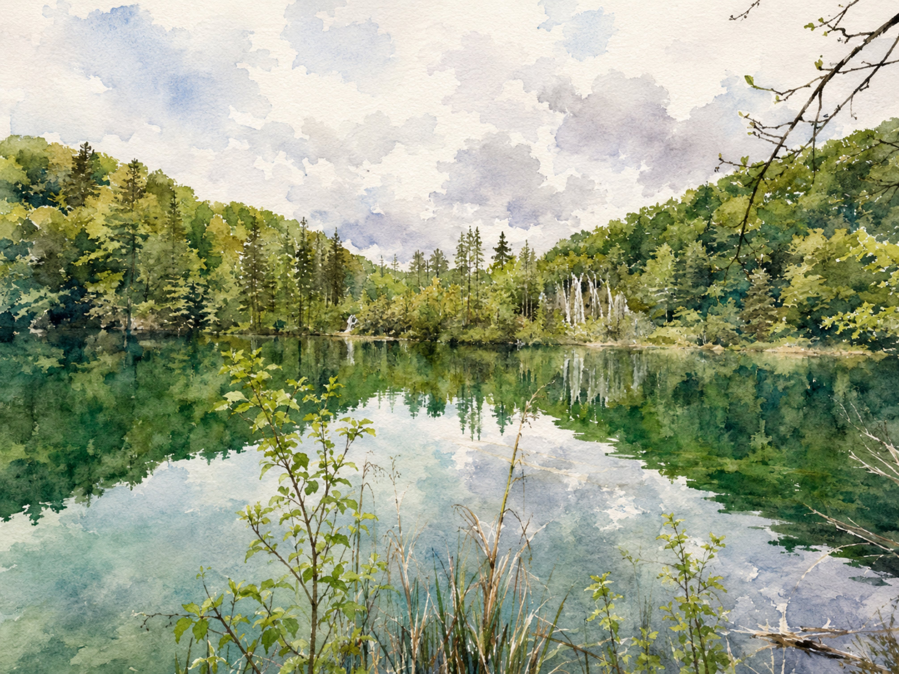
Unnatural Horizon
Photography
An altered landscape imagines a future shaped by unchecked human activity.
Familiar places become unfamiliar, inviting reflection on the environmental legacy we leave behind.
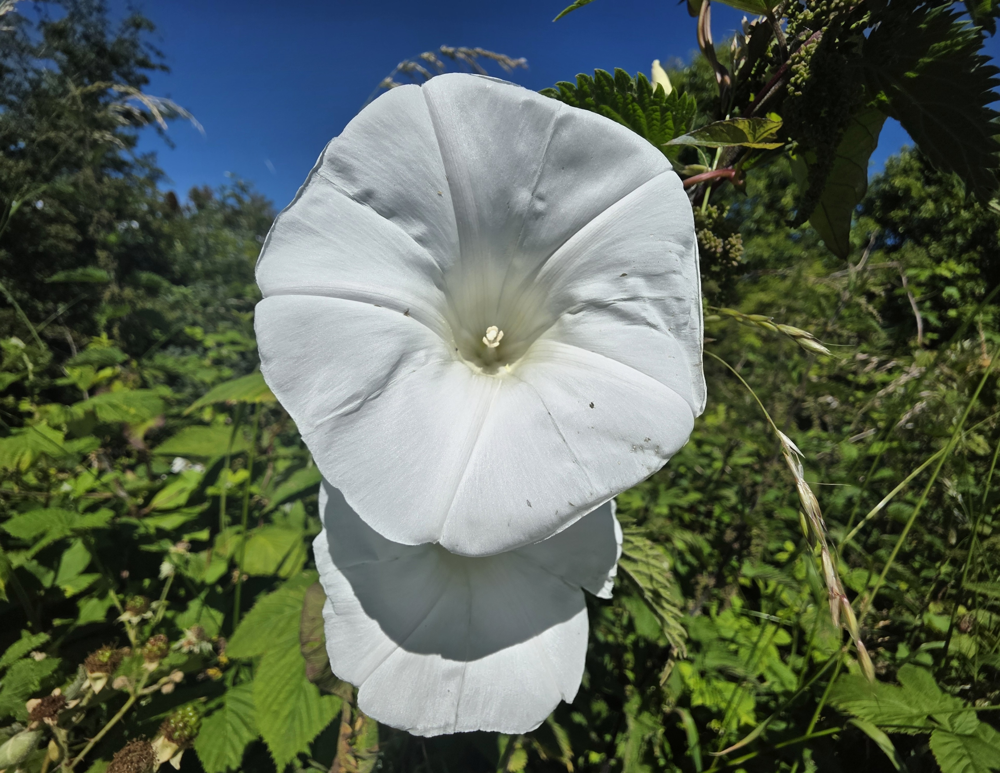
Tipping Point
Photography
As ecosystems cross critical thresholds, recovery becomes increasingly difficult.
The work reflects on the urgency of climate action while reminding us that the future is still ours to shape.